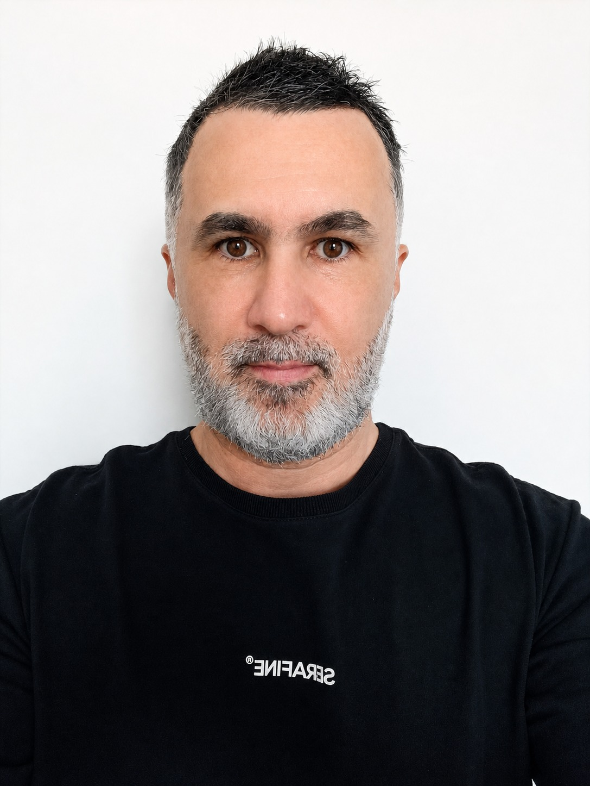

Desenvolvedor Backend Python · APIs, Integrações & Cloud
Mais de 20 anos em Tecnologia e Serviços — cerca de 10 dedicados ao desenvolvimento backend. Construo soluções confiáveis e escaláveis com Python, Django, FastAPI e AWS, e venho me aprofundando em IA Generativa, LLMs e RAG.

Sou Desenvolvedor Backend Python, com mais de 20 anos de experiência em Tecnologia e Serviços — cerca de 10 deles dedicados ao desenvolvimento backend. Ao longo da minha trajetória, atuei em empresas dos segmentos de tecnologia, serviços, educação, EdTech, InsurTech e energia elétrica.
Tenho experiência no desenvolvimento de APIs, integrações entre sistemas e automações, buscando criar soluções confiáveis, eficientes e preparadas para evoluir. Gosto de investigar desafios, entender as necessidades do negócio e transformá-las em soluções práticas por meio da tecnologia.
Minha atuação inclui Python, Django, FastAPI, Django REST Framework, bancos de dados relacionais e NoSQL, serviços AWS, Docker e arquiteturas de software. Também venho ampliando meus conhecimentos em Inteligência Artificial Generativa, com foco em LLMs e soluções baseadas em RAG.
Sou formado em Administração e atualmente curso uma pós-graduação em IA Generativa Aplicada e Arquiteturas Inteligentes. A combinação entre visão de negócio e experiência técnica me ajuda a compreender diferentes contextos e contribuir para soluções alinhadas às necessidades das equipes e organizações.
Objetivo: atuar como Engenheiro de IA, Especialista em LLMs ou Arquiteto de Soluções Inteligentes. Competências: Programação LLM Determinística, RAG e mais 3 competências.
Em andamentoFormação que reforça a visão de negócio somada à experiência técnica em desenvolvimento de software.
Aberto a novas oportunidades como Desenvolvedor Backend Python, com interesse crescente em projetos de IA Generativa e LLMs.